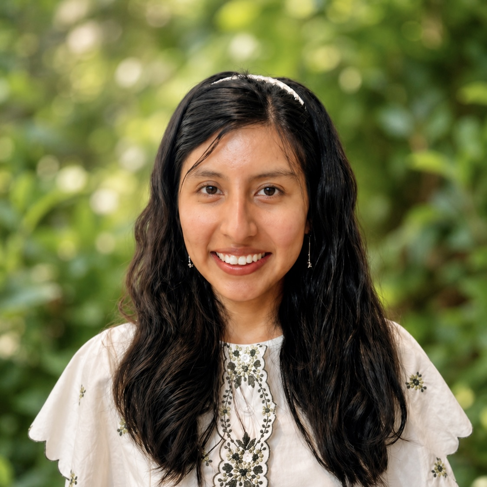
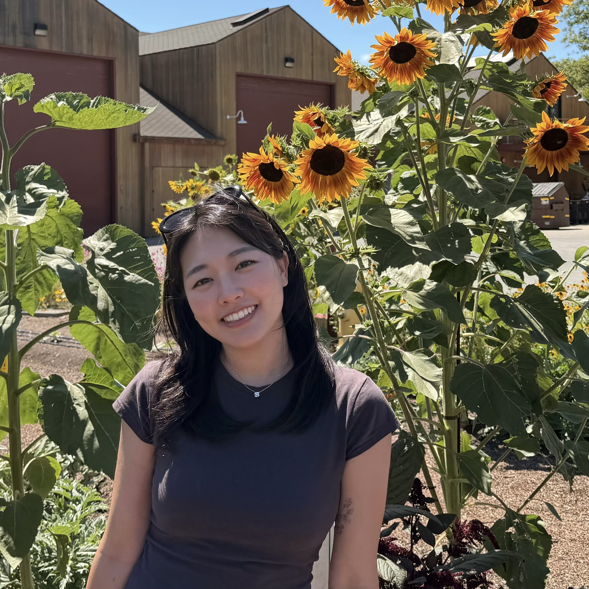
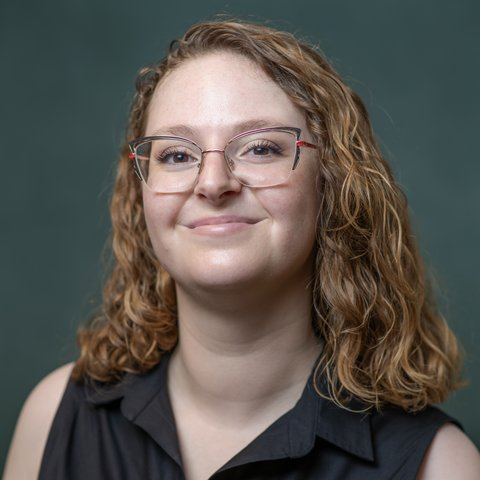

Welcome
Forum for student research, mentorship, and community at NAACL 2027.
The NAACL 2027 Student Research Workshop (SRW) will be held in conjunction with NAACL 2027 in San Francisco, California, during the conference on June 1-5, 2027; the exact workshop date will be announced. The SRW brings together students working across computational linguistics, natural language processing, and machine learning.
The workshop provides a supportive venue for students to present research, receive feedback from the international NLP community, meet mentors and peers, and learn how to develop, evaluate, and communicate high-quality research. We welcome students at multiple stages, including high school, undergraduate, MSc/MA, and PhD students.
Important Dates
All deadlines are 11:59 PM UTC-12, anywhere on earth (AoE), unless otherwise stated.
| Milestone | Date |
|---|---|
| First Call for Papers | September 7, 2026 (Monday) |
| Mentorship request deadline | November 16, 2026 (Monday) |
| Mentor-mentee matching | November 23, 2026 (Monday) |
| SRW paper submission deadline (OpenReview) | January 18, 2027 (Monday) |
| Acceptance notification | March 15, 2027 (Monday) |
| Grant application deadline | TBD to be announced with grant details |
| Grant notification (tentative) | March 26, 2027 (Friday) |
| Camera-ready papers due | March 29, 2027 (Monday) |
| NAACL 2027 conference | June 1-5, 2027 |
| NAACL 2027 SRW workshop | TBD exact date to be announced |
News
The latest calls, deadlines, and workshop updates.
Looking for feedback on an idea, preliminary results, or a draft? Request a mentor by November 16, 2026. Mentors and potential reviewers can also sign up.
Our first Call for Papers is available. We welcome thesis proposals and student research papers, with direct submissions due January 18, 2027.
The draft NAACL 2027 SRW website is launched.
Call for Papers
Student research papers and thesis proposals for NAACL 2027 SRW.
About the Student Research Workshop
The NAACL 2027 Student Research Workshop is a forum for student-led work in computational linguistics, natural language processing, and closely related areas of machine learning. Participants can present completed work, work in progress, or thesis proposals and receive feedback from reviewers, mentors, and the broader NAACL community.
Submission Categories
Thesis Proposals
Appropriate for PhD students who have identified a thesis topic and would like feedback on the proposed direction, research plan, and broader framing.
Research Papers
Appropriate for completed work or work in progress with preliminary results. The first author must be a current student or must have completed the work while a student.
Archival and Non-Archival Tracks
Submissions in both categories may be archival or non-archival, based on the authors' preference. All accepted archival papers will be published in the NAACL 2027 SRW Proceedings. Non-archival papers may be submitted to any venue in the future except for another SRW, subject to the destination venue's policies.
Submission Route
Papers should be submitted through OpenReview by January 18, 2027. The workshop's OpenReview submission link will be posted here when available. An ARR commitment track is not planned unless a later official announcement states otherwise.
For pre-submission feedback, request mentorship by November 16, 2026. A complete paper is not required to request a mentor. Mentorship participants must still submit their paper through OpenReview by January 18, 2027 to be considered for the workshop.
Paper Length and Submission Requirements
- Long papers: up to eight (8) pages of content; accepted papers receive one additional page, for up to nine (9) pages.
- Short papers: up to four (4) pages of content; accepted papers receive one additional page, for up to five (5) pages.
- Both lengths allow unlimited pages for references and supplementary material such as appendices.
- All submissions, archival and non-archival, must follow the main conference's anonymity period and restrictions.
Read the Author Guidelines for detailed instructions. Submissions that do not follow these guidelines may be desk-rejected.
Topics of Interest
Topics are expected to follow the broad scope of NAACL and ACL venues, including but not limited to:
- Computational social science and social media
- Dialogue and interactive systems
- Discourse, pragmatics, syntax, semantics, morphology, and linguistic theory
- Ethics, responsible NLP, safety, fairness, privacy, and policy
- Information extraction, information retrieval, and text mining
- Interpretability, analysis, and evaluation of NLP models
- Language grounding, multimodality, speech, vision, and robotics
- Large language models, agents, tool use, reasoning, and adaptation
- Machine learning for NLP, multilinguality, and machine translation
- NLP applications, question answering, summarization, resources, and benchmarks
- Sentiment analysis, stylistic analysis, argument mining, and human-centered NLP
Submission Snapshot
Link forthcoming
Mentoring
Get feedback on your research before submitting to NAACL 2027 SRW.
Pre-Submission Mentorship Program
Interested in submitting to the NAACL 2027 Student Research Workshop and looking for feedback on your work? Sign up for our pre-submission mentorship program!
How It Works
- Request a mentor by November 16, 2026. Use the student form to share your research interests and mentorship needs.
- Get matched on November 23, 2026. Organizers will match students with mentors based on their research and support needs, then introduce each pair by email.
- Choose what works for you. You and your mentor can arrange a Zoom meeting, exchange emails, or discuss feedback on a draft.
- Submit your paper by January 18, 2027. To have your work considered for the SRW, submit it separately through OpenReview.
Participation is optional. Mentorship supports the development of your research and paper; it does not replace peer review or guarantee acceptance. Mentor-mentee introductions are made by email, so pre-submission mentorship is not anonymous.
Join the Program
Students: request feedback on your idea or research by November 16, 2026.
Apply as a MenteeInterested in supporting student researchers? Register your interest as a mentor or potential reviewer using our shared form.
Mentor / Reviewer Interest FormBoth links open Google Forms in a new tab.
- Request deadline
- November 16, 2026
- Mentor-mentee matching
- November 23, 2026
- SRW paper deadline
- January 18, 2027
Deadlines are 11:59 PM anywhere on earth (UTC-12).
Share Your Mentorship Experience
At the end of the program, mentors and mentees will be invited to share feedback on their experience. Pairs with accepted papers may also have the opportunity to spotlight their mentorship journey during the workshop. Further details will be shared with participants.
FAQs
Frequently asked questions adapted from recent SRW guidance.
-
Do I need a finished paper to request mentorship?
No. Early-stage ideas, ongoing work, preliminary results, and drafts are all welcome. Apply for mentorship by November 16, 2026.
-
Do all authors have to be students?
No. The first author must be a student, or must have completed the work while a student. Other authors may be non-students.
-
Can I submit a non-archival accepted paper to another venue later?
Yes, except for another SRW, provided the destination venue allows it and all double-submission policies are followed. A non-archival submission cannot be changed to archival after acceptance.
-
Is ARR commitment available?
No ARR commitment track is currently planned for NAACL 2027 SRW. The workshop is planned as direct submission only unless later announced otherwise.
-
If I submit to mentorship, do I also need to submit to the workshop?
Yes, if you want your paper considered for the workshop. Request mentorship through the student form by November 16, 2026, then submit your paper separately through OpenReview by January 18, 2027.
-
What is the format for a thesis proposal?
Use the official ACL templates and the long-paper (up to 8 content pages) or short-paper (up to 4 content pages) limits. References and appendices do not count toward these limits. Thesis proposals should explain the proposed direction, research plan, and broader framing.
-
Can a systematic literature survey be submitted?
Yes, if it is student-led, relevant to computational linguistics/NLP, and the first author satisfies the student requirement.
-
What happens if the student author cannot attend in person?
Presentation expectations, remote options, and travel support will be announced after coordination with NAACL 2027.
Organization
The student organizers and faculty advisors behind NAACL 2027 SRW.
Student Organizers

Cheng Qian
University of Illinois Urbana-Champaign

Belu Ticona
George Mason University

Dayeon Ki
University of Maryland
Faculty Advisors

Travel and Grants
Financial support, visa guidance, and student travel information.
SRW Grant Application Guideline
We plan to invite eligible students to apply for SRW grants that may help cover registration, travel, or accommodation expenses. The funding situation and exact number of grants are TBD.
Priority Consideration
- Students whose paper has been accepted and who are first authors.
- Students presenting work at the SRW.
- One funded author per accepted paper, subject to budget.
- Students from developing countries or marginalized communities.
- First-time NAACL/ACL-family conference attendees.
- Students without other travel, registration, or diversity and inclusion funding.
What to Submit
Application materials are expected to include:
- Basic personal and academic information.
- A personal statement explaining need and motivation.
- Optional supporting or justification materials.
- Proof of accepted-paper status, if applicable.
Visa Process
NAACL 2027 will take place in the United States. Attendees who need a visa should begin the process as early as possible after acceptance or registration. Official invitation-letter procedures and conference visa guidance are TBD.
Program
Tentative structure for talks, papers, mentoring, panels, and round tables.
| Time | Session | Details |
|---|---|---|
| TBD | Opening Remarks | Welcome from SRW chairs and advisors. |
| TBD | Invited or Mentor Talk | Speaker TBD. Possible theme: choosing and framing a strong NLP research problem. |
| TBD | Student Oral Presentations | Selected accepted papers and thesis proposals. |
| TBD | Poster Session | Accepted archival and non-archival papers. |
| TBD | Mentorship Spotlight (tentative) | Mentor-mentee pairs with accepted papers may share their mentorship journey. |
| TBD | Panel Talk | Possible theme: the next big questions in NLP and what students should work on. |
| TBD | Round Tables | Small-group discussions on writing papers, networking, internships, PhD applications, and research life. |
| TBD | Awards and Closing Remarks | Best Paper, Best Thesis Proposal, and Outstanding Reviewer awards. |
Accepted Papers
Accepted papers will be listed after notifications on March 15, 2027.
Archival
TBD
Non-Archival
TBD
Awards
Recognition for student authors and reviewers.
Best Paper
Selected from accepted research papers. Criteria and committee: TBD.
Best Thesis Proposal
Selected from accepted thesis proposal submissions. Criteria and committee: TBD.
Outstanding Reviewers
Recognizing careful, constructive, timely reviews. Criteria and recipients: TBD.
Sponsors
Supporters will be added as funding is confirmed.
Policies
Community standards and workshop policies.
Anti-Harassment Policy
NAACL 2027 SRW will adhere to ACL-family anti-harassment and professional conduct policies. Participants are expected to treat one another with respect in all workshop spaces, including in-person, virtual, and online channels.
Contact
Questions about submissions, mentoring, grants, or organization.
Email: naacl27-srw@googlegroups.com
Last updated: September 10, 2026